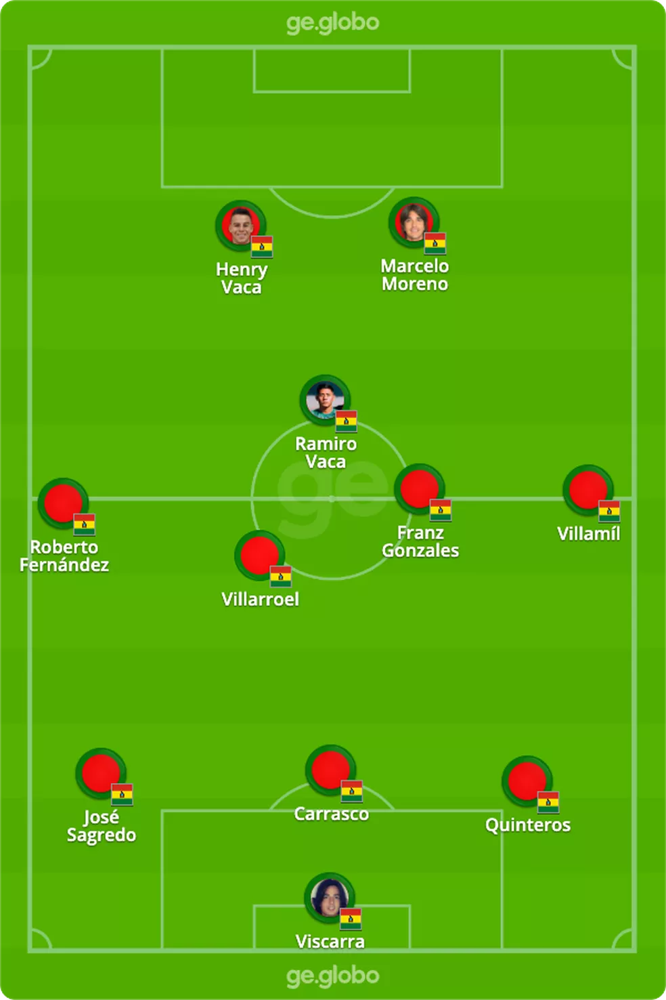

Bolívia x Brasil - Foto: Infoesporte
O Brasil vai enfrentar nesta terça-feira a seleção da Bolívia e os efeitos de jogar a 3.600m acima do nível do mar, em La Paz. A partida é válida pela 18ª e última rodada das Eliminatórias Sul-americanas para a Copa do Mundo e começa às 20h30 (de Brasília) no estádio Hernando Siles.
A
partida tem transmissão da Globo, SporTV
e do ge, com live antes da partida, para todo o Brasil.
Classificada antecipadamente desde a 13ª rodada, a Seleção é líder isolada da competição com 42
pontos — quatro de distância da Argentina — e ainda está invicta após 16 partidas.
Se vencer a Bolívia em La Paz, o Brasil vai estabelecer novo recorde de pontos na história das Eliminatórias
no atual formato, ultrapassando os 43 pontos feitos pela Argentina na campanha para a Copa de 2002.
Além disso, a equipe comandada por Tite tenta ampliar a maior série invicta na competição: são 33
jogos sem derrota.
A
expectativa de público é razoável. Até o início da noite de segunda, cerca de 13 mil ingressos tinham sido
vendidos - aproximadamente metade desses, porém, de torcedores que compraram pacote para todos os jogos das
Eliminatórias
Apesar dessa regularidade e do bom momento da Seleção, os resultados em La Paz fazem um contraponto: a
Bolívia já recebeu o Brasil oito vezes nesta cidade, venceu quatro, empatou duas e só perdeu duas partidas
(1981 pelas Eliminatórias e 1997, na final da Copa América).
Só que os donos da casa não têm mais o que disputar nesta última rodada da competição. A Bolívia é a vice-lanterna, com apenas 15 pontos em 17 jogos, e não tem mais chances de classificação nem para a repescagem da Copa do Mundo.
Na rodada de abertura das Eliminatórias, em outubro do ano passado, o
Brasil goleou a Bolívia por 5 a 0 em São Paulo, gols de Philippe Coutinho, Roberto
Firmino (duas vezes), Marquinhos e Carrasco (contra).
Na história, as seleções já se enfrentaram 31 vezes: 22 vitórias brasileiras, 4 empates e 5 derrotas. Em Eliminatórias, são 16 jogos, com 9 vitórias do Brasil, 4 empates e 3 vitórias da Bolívia.
Trasmissão: o jogo terá transmissão da TV Globo, com narração de Galvão Bueno e comentários de Ana
Thaís Matos, Caio Ribeiro e Sandro Meira Ricci. O SporTV também exibe a partida, com narração de Gustavo
Villani e comentários de Pedrinho, Paulo Vinícius Coelho e Fernanda Colombo
Tempo real e transmissão: o ge faz cobertura especial,
com live antes da partida e também transmite a partida em tempo real, com vídeos exclusivos – clique aqui para conferir.

Escalações prováveis — Foto: Arte/ge
Brasil - Técnico: Tite
A Seleção irá a campo com uma escalação bem diferente em relação ao jogo anterior. Tite vai promover sete mudanças no time titular. Philippe Coutinho e Richarlison assumem as vagas em aberto de Vini Jr e Neymar, suspensos. Daniel Alves, Éder Militão, Alex Telles, Fabinho e Bruno Guimarães também entram na equipe.
A proposta é dar uma oportunidade desde o início para jogadores que estiveram no banco de reservas nas últimas partidas e deram retorno quando acionados.
Desfalques: goleiros Ederson, cortado com gastroenterite, e Weverton, após trauma na mão esquerda; zagueiro Gabriel Magalhães, que pediu dispensa para acompanhar o nascimento da filha; atacantes Raphinha (com Covid-19), Vini Jr e Neymar, os dois últimos suspensos.
Pendurados: entre os convocados, Alisson, Thiago Silva, Marquinhos, Fred, Bruno Guimarães, Antony e Richarlison.
+ CLIQUE AQUI e veja mais notícias da Seleção
Provável escalação da seleção brasileira para enfrentar a Bolívia — Foto: Foto: ge
Bolívia - Técnico: César Farías
O técnico César Farías terá de fazer duas mudanças obrigatórias no time, por causa das suspensões de Enoumba e Haquin. Villamil e Quinteros são os mais cotados para substituí-los.
No gol a dúvida é entre Viscarra e Cordano. Depois dos últimos dias de treino em La Paz, a expectativa é por trocas também no meio de campo, com a saída de John García para a entrada de Ramiro Vaca.
O ano não tem sido nada bom para a Bolívia nas Eliminatórias: três derrotas, para Venezuela (4 a 1), Chile (3 a 2) e Colômbia (3 a 0). E há cinco jogos, ou 12 anos, que essa seleção não consegue superar o Brasil. A última vez foi em outubro de 2009, por 2 a 1, nesse mesmo estádio Hernando Siles.
Vencer o Brasil depois de tanto tempo seria uma maneira de terminar positivamente o ciclo do técnico César Farías no comando da seleção boliviana — a federação não deve renovar o contrato com ele e já procura novos treinadores. Tentou contato até com o argentino Marcelo Bielsa. O atacante Marcelo Moreno deve terminar as Eliminatórias como o artilheiro do torneio, com 10 gols.
Desfalques: zagueiros Enoumba e Haquin, suspensos. Atacantes Bruno Miranda e Victor Abrego, machucados.
Pendurados: Carrasco, Ramiro Vaca, Villarroel e Sagredo.
Provável escalação da Bolívia para o jogo contra o Brasil pelas eliminatórias — Foto: ge
Apresentação arbitragem — Foto: Infografia